Formal title: System and Method for Non-Invasive, Expert-Aware Page-Cache Management for Mixture-of-Experts Model Inference on Memory-Constrained Linux Hosts
Repository: https://github.com/shreshth006/moepager · team fork:
https://github.com/AyushSinha2210/moepager (branch ayush)
Mixture-of-Experts (MoE) language models activate only a few "expert"
sub-networks per layer for each token: 8 of 64 in OLMoE-1B-7B, 4 of 32 in
gpt-oss-20b, 8 of 128 in Qwen3-30B-A3B. That makes them attractive for
consumer machines, which run them with llama.cpp in mmap mode when the
model is larger than free RAM, leaving the Linux page cache to decide
which weights stay in memory.
We show that the kernel's generic behaviour fits this workload poorly: - Scattered units. One expert's weights are three slices in three tensors hundreds of megabytes apart. - Read-around pollution. On a page fault, the kernel reads a window around the faulting page: 4 MiB on our test machine's btrfs. That pulls unused neighbouring experts into the cache and multiplies SSD traffic 3.7–4.8×. - Repacking. llama.cpp's default CPU weight repacking moves 77–100 % of expert bytes into anonymous memory, outside the page cache.
We present moepager, a Rust toolchain and an unprivileged user-space
daemon that manage the shared page cache at the granularity of
(layer, expert) units, without changing the inference engine's code or
binary:
1. It parses the GGUF header into an exact expert map.
2. It observes expert misses black-box by polling sentinel pages with
mincore().
3. It answers each miss with expert-completion readahead: bulk
posix_fadvise(WILLNEED) of the expert's remaining slices in 128 KiB
chunks. The chunking is necessary because the kernel silently truncates
larger requests.
4. A 64-line LD_PRELOAD shim turns off fault read-around on the model
mapping, which no stock llama.cpp option does on single-node machines.
The evaluation toolchain records ground-truth routing from llama.cpp, computes exact LRU miss-ratio curves, simulates policies against a Belady optimum, and runs llama.cpp under cgroup memory limits.
On a 15 GB laptop running OLMoE-1B-7B (4.2 GB) under memory limits of 1.5 GB and 2.5 GB, moepager's configuration decoded 1.40 and 3.21 tokens/s, versus 0.35 and 0.87 tokens/s for the same engine served by the default page cache. That is 3.7–4.0× faster, with 7–8× less SSD traffic and memory-pressure stall reduced from 12.7 % to 1.0 %. Default llama.cpp, by contrast, was OOM-killed at both limits unless allowed to spill 2.3–2.5 GB into compressed RAM swap. On a second model, gpt-oss-20b (12.1 GB), replaying real routing under 4 GB and 6 GB limits showed the same pattern: 1.6–2.0× faster than the kernel default, with 15–20× less SSD traffic.
We also report what did not work: a value-based pinning policy captured little of the optimal policy's 34–74 % miss reduction, and completion readahead without turning off read-around made performance worse.
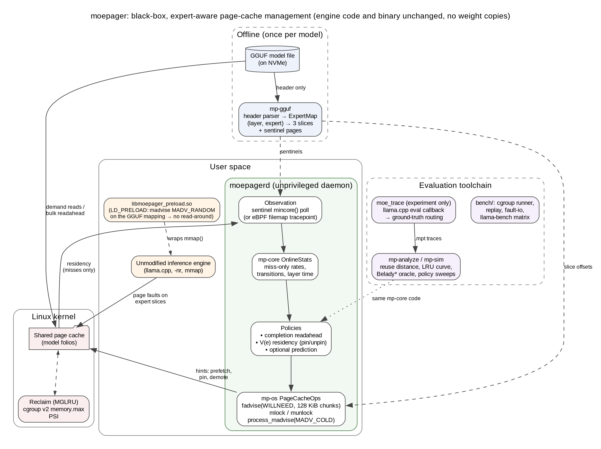
Figure 1. moepager architecture (source: docs/report/architecture-portrait.dot; a landscape version is architecture.png).
mp-gguf reads only the GGUF header and
builds the expert map: each (layer, expert) unit's three slice offsets
and sentinel pages.--no-repack (so weights stay in the
page cache) and with the LD_PRELOAD shim, which turns off read-around
on the model mapping.moepagerd polls sentinel pages, so it sees misses only. It updates
mp-core statistics and issues page-cache hints through mp-os:mlock pinning (CAP_IPC_LOCK);MADV_COLD demotion (CAP_SYS_NICE).memory.max budget, so
every page is charged to the same budget.moe_trace, an experiment-only llama.cpp eval callback, records
ground-truth routing.mp-analyze and mp-sim evaluate policies against Belady*, using
the same mp-core code as the daemon.bench/ runs real-kernel replays, the bandwidth microbenchmark and
llama-bench under memory limits.Mixture-of-Experts (MoE) language models replace each dense feed-forward block with many smaller "expert" networks plus a router. For every token, the router picks a few experts per layer (top-k), so only a small fraction of the parameters is used per token. In the three models studied here (values read from the real model file headers):
| Model | File (quantisation) | Size | Layers × experts | top-k | Expert share of file |
|---|---|---|---|---|---|
| OLMoE-1B-7B-0924 | Q4_K_M | 4.21 GB | 16 × 64 | 8 | 92.6 % |
| gpt-oss-20b | MXFP4 | 12.11 GB | 24 × 32 | 4 | 84.1 % |
| Qwen3-30B-A3B | Q4_K_M | 18.56 GB | 48 × 128 | 8 | 94.6 % |
Because only 4–8 experts per layer are touched per token, MoE models are an
attractive fit for consumer machines. A common way to run a model larger
than free RAM is llama.cpp in mmap mode: the model file is mapped into
memory, and the Linux page cache loads weights on demand and evicts them
under memory pressure.
The kernel's page cache is generic. Its reclaim policy (MGLRU) and its fault read-around know nothing about how a GGUF file is laid out or how MoE routing behaves. Our measurements on a 15 GB laptop (Section 6) show three concrete problems:
ffn_up_exps, ffn_gate_exps,
ffn_down_exps), hundreds of megabytes apart. The kernel cannot know
these three ranges belong together.A further, practical problem: llama.cpp on x86 CPUs with AVX2 by default repacks the most common quantised expert weights into ordinary (anonymous) memory. That is 77 % of the expert bytes for OLMoE and Qwen3 Q4_K_M, and 100 % for gpt-oss MXFP4. Under memory pressure those pages go to swap instead of the page cache.
Goal: make MoE inference faster on memory-constrained Linux machines, using knowledge of the model file's structure and of routing behaviour, without modifying the inference engine and without copying the weights.
MoE offloading inside the inference engine. Most systems that keep only part of an MoE model in fast memory are built into the engine, where the router's decisions are directly visible: - mixtral-offloading (Eliseev & Mazur, 2023): LRU expert cache plus speculative prefetch. - MoE-Infinity (Xue et al., 2024): activation-aware expert cache. - HOBBIT (2024): mixed-precision experts, implemented as about 8,000 lines added to llama.cpp. - Pre-gated MoE, ProMoE, DuoServe-MoE, Fate and similar: predict next-layer experts and prefetch them.
Inside llama.cpp itself there are several open proposals: PR #25294 (O_DIRECT expert streaming that bypasses the page cache), PR #26824 (expert heat map and mmap pinning), PR #29887, issue #20757 and discussion #27149. All of these modify the engine.
Using the OS page cache as the expert tier. Si et al. (arXiv
2608.12103, 2026) is the closest study. On a datacenter GH200 node they
show that kernel recency (LRU) serves about as much demand as an oracle
static-frequency pin, that Belady's bound leaves about one third of LRU's
misses addressable, and that fadvise(WILLNEED) prefetch hints gained only
0.3–5 %. Their engine reads with pread, so mmap fault behaviour and file
structure play no role.
Operating-system mechanisms. - cache_ext / cachebpf (Zussman et al., 2025) lets eBPF programs replace page-cache eviction, but needs a patched kernel. - MGLRU and DAMON are generic and know nothing of model structure. - vmtouch pins or evicts file ranges given by the user. - "LLM in a flash" (Alizadeh et al., Apple, 2024) and PowerInfer-2 bundle co-used weights to make flash reads large. That is the same idea as our expert-completion readahead, but those systems implement it inside the engine and require reformatting the model.
Gap. We found no system that manages the page cache for an unmodified engine using the model file's structure, and none that measures the effect of mmap fault read-around on MoE experts.
A GGUF file starts with a header listing every tensor's name, shape, type
and offset. mp-gguf parses only this header, so a truncated prefix of a
file works too. For each tensor named blk.<L>.<ffn_up|ffn_gate|ffn_down|ffn_gate_up>_exps.weight
with shape [ne0, ne1, n_expert]:
bytes = type_size × ne0·ne1·n_expert / block_size, using the ggml type
table.e's slice is [offset + e·bytes/n_expert, offset + (e+1)·bytes/n_expert).
Each expert is contiguous inside a tensor because the expert index is the
outermost dimension.*_exps.bias, [ne0, n_expert]) contribute one
row per expert.The slices of the same (L, e) are grouped into a unit, the granule for everything that follows. Slices are 32-byte aligned rather than page aligned, so a boundary page can belong to two units. A reverse page→unit index (sorted intervals plus a prefix-maximum array) handles this in O(log n).
For each slice, one sentinel page is chosen in its middle, at least 128 KiB from either edge, so that a neighbour's 128 KiB read-around cannot trigger it.
The daemon maps the model file read-only and periodically calls mincore()
on the sentinel pages. This works without root, even for files it doesn't
own. A sentinel changing from non-resident to resident means "unit
(L, e) has just been faulted in", which is a miss.
Hits are invisible to user space: pages already mapped are read through the CPU's page tables with no kernel involvement. All online statistics are therefore computed from misses only (Section 4.4).
Token boundaries are not visible either. They are inferred from layer
order: a new token starts when the observed layer drops below the running
maximum minus a slack. With root, the same events can be taken from the
filemap:mm_filemap_add_to_page_cache tracepoint (bpftrace script
included).
When a miss of unit u is observed, the daemon immediately issues
posix_fadvise(WILLNEED) over all slices of u, so the parts the engine
has not reached yet (typically the gate and down slices, hundreds of MB
away) arrive as large asynchronous reads instead of many small synchronous
faults. Two details turned out to be essential:
max(bdi->io_pages, ra->ra_pages) pages (force_page_cache_ra() in
mm/readahead.c). We found this when CI populated exactly 256 KiB of a
1 MiB request. Requests are therefore issued in 128 KiB chunks.The mechanism is prediction-free: it acts only on experts the router has already chosen.
For pinning with mlock, each unit e of size s_e gets a value per byte:
V(e) = rate(e) · (t_fault + s_e / B_demand) / s_e
Units are pinned greedily in decreasing V order until the pin budget is used up. Hysteresis (a newcomer must beat a pinned unit by 25 %) limits churn.
Because only misses are observable, rate(e) is defined as the miss rate per token while unpinned: decayed miss count ÷ decayed number of tokens the unit was exposed (not pinned). That is exactly the counterfactual a pin decision needs. While a unit is pinned it produces no misses and no exposure, so its estimate is frozen. A small random fraction of pinned units is released at each re-plan ("exploration") to refresh stale estimates. Exponential decay uses the scaled-weight trick, with periodic renormalisation, for O(1) updates.
Demotion of cold units uses process_madvise(pidfd, MADV_COLD) on the
engine's mapping, because fadvise(DONTNEED) cannot evict pages another
process has mapped (verified experimentally).
mp-sim replays a routing trace against a byte-capacity cache:
- A hit costs nothing.
- A miss is queued on a FIFO I/O channel, costing t_fault + s/B_demand,
or s/B_bulk when completion readahead is on.
- Compute time per layer is taken from the trace.
Policies: LRU, LFU, prefix pinning, an oracle static-frequency pin, V(e) with full or miss-only observation, predictive prefetch, and Belady* (evict the unit whose next use is furthest in the future). Belady* is the optimal bound for equal sizes and the standard heuristic for variable sizes.
Independently, mp-analyze computes reuse distances with a Fenwick tree in
O(N log N) and derives the exact LRU miss-ratio curve. An access hits
in a byte-capacity LRU cache iff (bytes of distinct units since its last
use) + its own size ≤ capacity. The simulator's LRU agrees with this curve
exactly, a cross-check between two independent implementations.
Kill criteria were fixed before measuring (IDEA_REVIEW §6): - K1: Belady* cannot save at least 15 % of misses relative to the kernel. - K2: fault-driven bandwidth is at least 0.75× bulk bandwidth. - K3: default llama.cpp beats every page-cache configuration.
Experiments:
moe_trace, a 170-line
experiment-only tool that reads llama.cpp's ffn_moe_topk-<layer>
tensors through the scheduler's eval callback. Three prompts (chat, code,
prose) × 255 decode tokens on OLMoE, then analyze and simulate.systemd-run --user -p MemoryMax=…,
swap 0). Measure SSD bytes (/proc/self/io), major faults and time.D: end to end. llama-bench decode throughput under the same memory
walls, for:
--repack 0;Daemon and engine always share the cgroup, so page-cache charges count against the same budget.
| Layer | Choice | Why |
|---|---|---|
| Core, simulator, daemon, CLI | Rust (stable), 10 crates, ≈ 8,900 lines | Predictable latency for a daemon; fast enough for simulation sweeps; one language, so the daemon and the simulator share the same policy code |
| OS interface | libc syscalls behind traits (PageCacheOps, ResidencyProbe) |
Real Linux implementation + MockOps for deterministic tests |
| Ground-truth capture | C++ against libllama (tools/moe_trace, 169 lines) |
Needs the engine's eval callback; experiment-only |
| Read-around shim | C, LD_PRELOAD (tools/preload, 64 lines) |
Disables fault read-around on the model mapping without touching the engine's code or binary |
| Privileged tracing | bpftrace script (26 lines) | Optional, root only |
| Fixtures, metric parsing, probes | Python (stdlib + pytest), 674 lines | Independent GGUF writer so parser tests aren't self-confirming |
| Experiments | Bash + cgroup v2 (systemd-run --user), no root |
Fixed memory budget per run |
| CI | GitHub Actions: fmt, clippy -D warnings, tests, ruff, pytest, demo smoke run |
| Crate | Responsibility |
|---|---|
mp-gguf |
GGUF v2/v3 header parser, ggml type table, ExpertMap, page index, sentinels, repack-risk detection |
mp-trace |
.mpt binary trace format (spec in docs/TRACE_FORMAT.md), CSV import/export, token inference |
mp-core |
Deterministic RNG, cost model, OnlineStats (miss-only), ResidencyEngine (V(e)), PrefetchPlanner |
mp-synth |
Synthetic routing generator (skew, reuse, cross-layer affinity, drift) |
mp-analyze |
Fenwick-tree reuse distance, exact LRU miss-ratio curve, routing predictability, timing |
mp-sim |
Trace-driven cache + I/O-channel simulator, policies, Belady* |
mp-os |
mincore, cachestat, chunked fadvise, mlock, process_madvise, /proc/pid/maps/smaps parsing |
mp-recorder |
Sentinel and full-scan recorders, page→expert conversion, bpftrace ingest, mmap/pread trace replayer |
moepager |
CLI: gguf-map, synth, analyze, sim, import-csv, trace-csv, record, ingest-bpftrace, page2expert, replay, fault-io |
moepagerd |
Daemon: policies none, willneed-all, lru-pin, v; sources sentinel / trace:; ops linux / mock |
| Feature | Status |
|---|---|
| GGUF expert map, verified on 3 real models | done, tested |
| Ground-truth routing capture + import | done, used on OLMoE |
| Trace analysis, simulator, Belady bound | done, tested, used |
| Unprivileged sentinel observation | done, tested end to end on real files |
| Chunked completion readahead | done, measured (Section 6) |
| Read-around shim | done, measured (Section 6) |
| V(e) pinning | implemented and unit-tested; live use needs CAP_IPC_LOCK (default memlock limit is 8 MB), not measured |
MADV_COLD demotion |
implemented; needs CAP_SYS_NICE, not measured |
| eBPF observation | script + ingest written; needs root, not run |
| Start-up checks: read-around still on, daemon outside the engine's cgroup | done, tested live |
MADV_POPULATE_READ prefetch fallback (--prefetch-mode populate) |
done, tested on a real file; not benchmarked |
| PSI-driven budget control, dashboard | future work |
mincore/cachestat/fadvise/mlock semantics
on a real file;stat() and /proc/pid/maps;make demo runs the full pipeline with no model or root. It parses the
real Qwen3 map, generates routing, analyzes it, simulates policies, does a
daemon dry run, and records a replayed trace black-box. With a model,
bench/phase7.sh runs experiments A–D. Terminal screenshots of the tools
on the real OLMoE model follow.
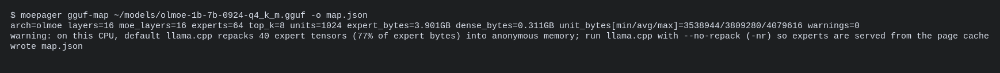
Figure 2. Expert map from the real GGUF header, with the repack warning for this AVX2 CPU.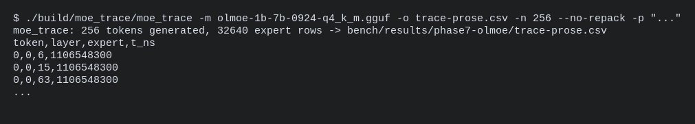
Figure 3. Ground-truth routing capture through llama.cpp's eval callback.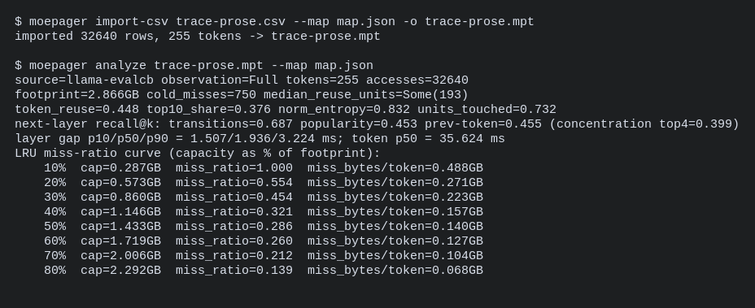
Figure 4. Importing the routing trace and analyzing it: reuse, predictability, exact LRU curve.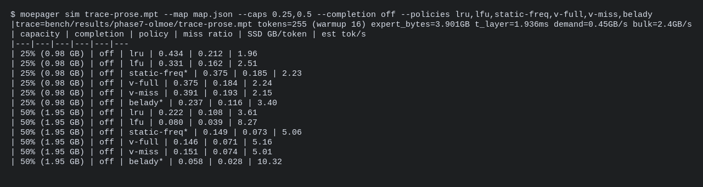
Figure 5. Policy simulation, including the Belady* bound.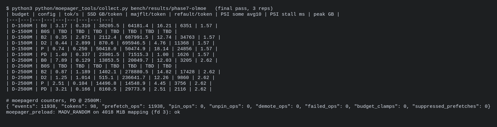
Figure 6. Collected end-to-end results (B0S rows are OOM-killed runs), daemon counters, and the shim at work.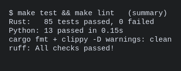
Figure 7. Test and lint status.| Item | Value |
|---|---|
| Machine | Laptop, Intel i5-12450H (8 cores / 12 threads, AVX2), 15 GiB RAM + 8 GiB zram swap, desktop session running |
| Storage | Solidigm P41 Plus 512 GB NVMe (PCIe 4, QLC); /home is btrfs with compress=zstd:1; btrfs readahead window 4 MiB |
| OS | Fedora 42, Linux 6.19.14, MGLRU enabled |
| Engine | llama.cpp commit 970b51c (2026-10-22), CPU only, 8 threads |
| Model | OLMoE-1B-7B-0924 Q4_K_M (4.21 GB; 16 layers × 64 experts, top-8; experts 3.90 GB, units ≈ 3.8 MB) |
| Memory budget | cgroup v2 memory.max = 1.5 GB or 2.5 GB, swap off unless stated; daemon and engine in the same cgroup |
| Cold start | model evicted from the page cache before every run |
All numbers below are measured. Raw outputs are in
bench/results/phase7-olmoe/ (logs, CSVs, cgroup statistics, journal
excerpts).
moe_trace recorded 255 decode tokens for each of three prompts: 32,640
expert uses per prompt. Measured properties:
| Prompt | Same expert reused on the next token | Top-10 % experts' share of uses | Next-layer recall: transitions / popularity / previous token |
|---|---|---|---|
| chat | 41 % | 30 % | 0.60 / 0.36 / 0.42 |
| code | 48 % | 55 % | 0.78 / 0.66 / 0.48 |
| prose | 45 % | 38 % | 0.69 / 0.45 / 0.46 |
Routing is strongly local in time (41–48 % reuse) and predictable across layers (60–78 % recall). The simulator was fed these traces with expert caches of 15–70 % of the expert bytes. Miss ratios for the prose prompt (other prompts in the CSVs):
| Cache size | LRU | LFU | V(e), miss-only | Belady* (optimal) | Belady* saves vs LRU |
|---|---|---|---|---|---|
| 15 % | 0.552 | 0.500 | 0.672 | 0.345 | 38 % |
| 25 % | 0.434 | 0.331 | 0.391 | 0.237 | 45 % |
| 35 % | 0.291 | 0.205 | 0.274 | 0.144 | 50 % |
| 50 % | 0.222 | 0.080 | 0.151 | 0.058 | 74 % |
| 70 % | 0.004 | 0.004 | 0.004 | 0.004 | 4 % |
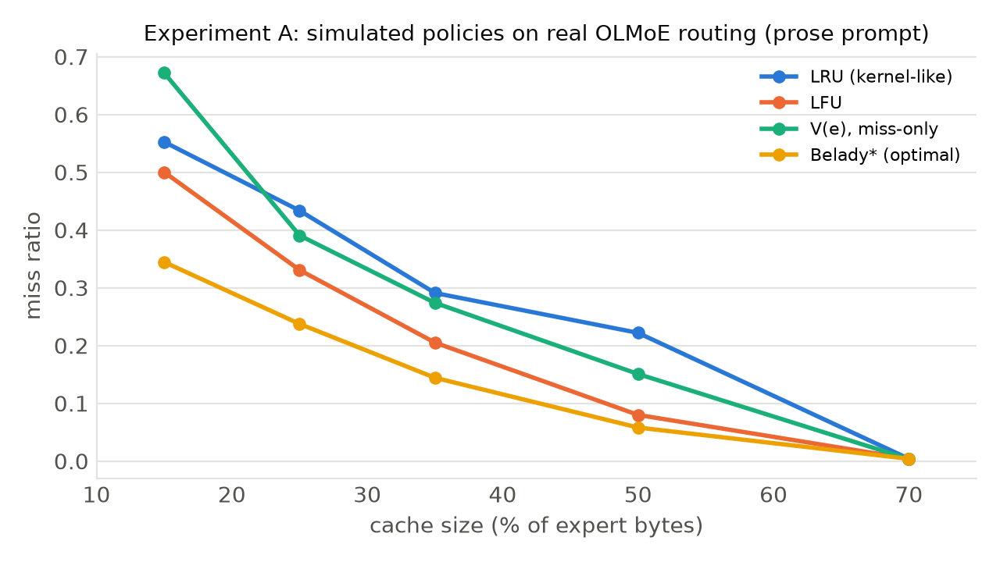
Reading: - An optimal policy would avoid 34–74 % of LRU's misses at 15–50 % capacity across all three prompts, so kill criterion K1 does not fire. - Our V(e) residency policy captures only part of that gap. It beats LRU at 25–50 % but is worse at 15 %. - Plain LFU beats V(e) in most cells.
Why V(e) lagged (pin-fraction sweep). The default lets V(e) pin only 60 % of the cache and leaves the rest to LRU. With full observation and a pin fraction of 0.95, V(e) matches LFU almost exactly: prose at 50 %, 0.081 vs 0.080; code at 15 %, 0.278 vs 0.276. Its ranking is sound.
The remaining gap is the cost of black-box observation. With misses only, V(e) at 0.95 has 10–40 % more misses than with full observation in most cells, and up to 2× in a few code-prompt cells (code at 25 %: 0.162 vs 0.075). That is exactly the information hidden from an unprivileged daemon, because page-cache hits are invisible.
Pinning needs CAP_IPC_LOCK, so it was not used in the end-to-end runs.
Data: bench/results/phase7-olmoe/pinfrac-sweep/.
The prose trace was replayed on the real model file through mmap, with 4
threads touching each expert's pages, under the memory wall. The trace
needs 0.49 GB of expert data per token.
| Budget | Variant | tokens/s | SSD read / token | Major faults / token |
|---|---|---|---|---|
| 1.5 GB | kernel default | 0.79 | 1.80 GB | 956 |
| 1.5 GB | read-around off (MADV_RANDOM) |
0.75 | 0.16 GB | 38,802 |
| 1.5 GB | + moepagerd (read-around on) | 0.66 | 1.61 GB | 881 |
| 1.5 GB | read-around off + moepagerd | 2.58 | 0.05 GB | 12,342 |
| 2.5 GB | kernel default | 3.25 | 0.37 GB | 338 |
| 2.5 GB | read-around off | 5.81 | 0.02 GB | 5,704 |
| 2.5 GB | + moepagerd (read-around on) | 2.82 | 0.36 GB | 321 |
| 2.5 GB | read-around off + moepagerd | 2.48 | 0.05 GB | 12,641 |
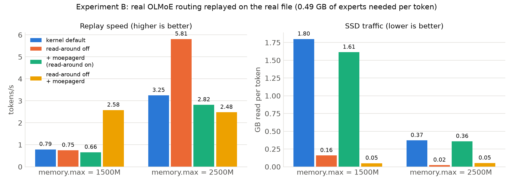
Reading: - Read-around pollution dominates. With the kernel's default 4 MiB read-around, the SSD read 1.80 GB per token at 1.5 GB to deliver 0.49 GB, and nearly every expert access missed: neighbouring, unused experts filled the cache. - The simulator is validated once pollution is removed. With read-around off, traffic fell 11× to 0.16 GB/token, which matches the simulator's LRU prediction for this capacity (0.14 GB/token, Section 6.2). - Fewer bytes alone is not faster. Read-around off produced 39,000 small 4 KiB faults per token, so speed stayed at 0.75 tok/s. - moepagerd needs read-around off. With read-around on, its sentinels fire on polluted pages and it made things slightly worse. With read-around off it turns the small faults into bulk reads: 3.3× faster than the kernel default at 1.5 GB. - At 2.5 GB, where most accesses already hit, read-around off alone was best in this replay; the daemon added overhead.
32 cold expert units (3.8 MB each, three slices) of the real model file were read in three ways, 3 seeds each:
| Method | GB/s delivered | SSD bytes read ÷ needed |
|---|---|---|
| mmap page faults (8 threads) | 0.15–0.24 | 4.8× |
| WILLNEED, one call per slice | 0.97–1.42 | 1.00× |
| WILLNEED, 128 KiB chunks | 1.49–1.70 | 1.00× |
| pread, 1 MiB blocks | 0.44–0.56 | 1.24× |
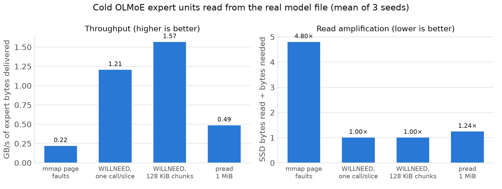
Bulk chunked readahead delivers expert bytes ≈ 7× faster than page faults, with no amplification, so kill criterion K2 does not fire. Chunking matters: single calls are truncated by the kernel to the device readahead size.
llama-bench decoded 32 tokens × 3 repetitions (after a 1-token warmup)
inside the cgroup, starting cold. Decode throughput is mean ± standard
deviation over the 3 repetitions. SSD traffic and major faults are
cgroup/device totals divided by all 97 decoded tokens. PSI is the cgroup's
memory-pressure "some" average over the last 10 s at exit.
| Budget | Configuration | tokens/s | SSD GB / token | Major faults / token | Memory PSI (some, avg10) |
|---|---|---|---|---|---|
| 1.5 GB | B0 default llama.cpp (repack; zram swap allowed) | 3.17 ± 0.26 | 0.31 | 38,206 | 16.2 % |
| 1.5 GB | B0S default llama.cpp, no swap | OOM-killed | — | — | — |
| 1.5 GB | B2 --repack 0 (page cache, kernel only) |
0.35 ± 0.01 | 2.87 | 2,112 | 12.7 % |
| 1.5 GB | D2 B2 + moepagerd | 0.44 ± 0.02 | 2.90 | 871 | 4.8 % |
| 1.5 GB | P B2 + read-around off (shim) | 0.74 ± 0.07 | 0.25 | 50,418 | 18.1 % |
| 1.5 GB | PD B2 + read-around off + moepagerd | 1.40 ± 0.22 | 0.34 | 23,902 | 1.0 % |
| 2.5 GB | B0 default llama.cpp (repack; zram swap allowed) | 7.89 ± 1.37 | 0.13 | 13,854 | 12.0 % |
| 2.5 GB | B0S default llama.cpp, no swap | OOM-killed | — | — | — |
| 2.5 GB | B2 --repack 0 |
0.87 ± 0.02 | 1.19 | 1,402 | 14.8 % |
| 2.5 GB | D2 B2 + moepagerd | 1.25 ± 0.04 | 1.01 | 515 | 12.3 % |
| 2.5 GB | P B2 + read-around off | 2.51 ± 0.51 | 0.10 | 14,497 | 4.5 % |
| 2.5 GB | PD B2 + read-around off + moepagerd | 3.21 ± 0.65 | 0.17 | 8,161 | 2.5 % |
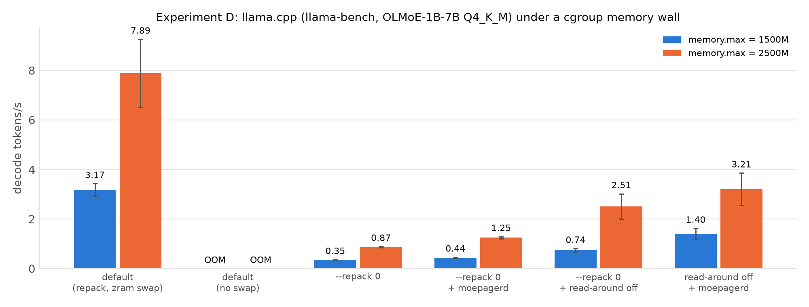
Against the same engine serving weights from the page cache (B2): - PD is 4.0× faster at 1.5 GB and 3.7× faster at 2.5 GB. - PD reads 8.4× and 7.0× fewer bytes from the SSD per token. - PD cuts memory-pressure stall (PSI) from 12.7 % to 1.0 % at 1.5 GB. This matters for other applications on the machine.
Splitting the gain: - Turning read-around off accounts for 2.1–2.9×. - moepagerd's completion readahead adds a further 1.9× (1.5 GB) and 1.3× (2.5 GB) on top. - moepagerd without read-around off (D2) helps only 1.3–1.4×.
Variability: PD at 2.5 GB was measured in three independent sessions: 3.30 (1 repetition), 5.42 ± 1.07 and 3.21 ± 0.65 tok/s. The table reports the last.
Against default llama.cpp (B0):
- B0 is faster (3.17 and 7.89 tok/s), but it gets there by pushing 2.5 GB
and 2.3 GB of repacked weights into zram, compressed swap that lives in
RAM and is not counted against memory.max (journal: "1.4G memory peak,
2.5G memory swap peak"). It therefore used far more than the budget.
- With swap disabled, so it is held to the same budget (B0S), default
llama.cpp was OOM-killed at both budgets: it cannot run at all.
- moepager's configuration runs inside the budget.
A fair speed comparison against default llama.cpp therefore needs a machine whose swap is on disk, or a budget that includes zram. That is future work.
Ablation (refractory window): suppressing repeated completion requests for 20 ms looked like an obvious efficiency fix, but it doubled misses and cut PD at 2.5 GB from 3.21–5.42 to 1.09–2.05 tok/s. The repeats re-fetch pages reclaimed while the engine is still working through an expert. The window is therefore off by default.
The same pipeline was run on gpt-oss-20b MXFP4: 12.1 GB file, 24 layers ×
32 experts, top-4, 13.25 MB per expert unit. Memory limits were 4 GB and
6 GB, and routing was recorded for 3 prompts × 128 tokens. Raw data:
bench/results/phase7-gptoss/.
Experiment D did not run. Its first configuration, default llama.cpp, repacks 100 % of gpt-oss's expert bytes (≈ 10 GB) into anonymous memory and swaps them to zram, which lives in RAM. The machine ran critically low on memory and the run was stopped. This is itself evidence of the problem moepager avoids, but there are no end-to-end gpt-oss numbers.
Bandwidth (C), 13.25 MB units:
| Method | GB/s | Amplification |
|---|---|---|
| mmap faults | 0.14–0.44 | ≈ 2.5× |
| WILLNEED, 128 KiB chunks | 1.44–1.88 | 1.00× |
| WILLNEED, one call per slice | 0.93–1.10 | 1.44×, truncated |
| pread | 0.31–0.65 | — |
Replay (B), prose trace, 1.27 GB of experts per token:
| Budget | Variant | tokens/s | SSD read / token |
|---|---|---|---|
| 4 GB | kernel default | 1.05 | 1.33 GB |
| 4 GB | read-around off | 0.49 | 0.30 GB |
| 4 GB | + moepagerd (read-around on) | 1.11 | 0.73 GB |
| 4 GB | read-around off + moepagerd | 1.64 | 0.07 GB |
| 6 GB | kernel default | 2.68 | 0.36 GB |
| 6 GB | read-around off | 1.24 | 0.12 GB |
| 6 GB | + moepagerd (read-around on) | 3.27 | 0.25 GB |
| 6 GB | read-around off + moepagerd | 5.47 | 0.02 GB |
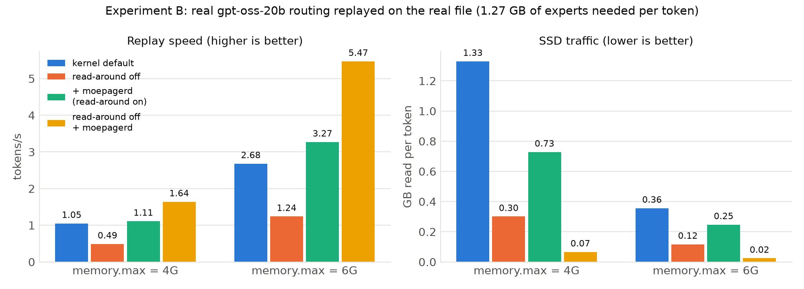
Reading: - The best configuration is the same as for OLMoE: read-around off plus completion readahead, 1.6× and 2.0× faster than the kernel default, with 15–20× less SSD traffic. - Two differences from OLMoE: - gpt-oss's expert slices (4.4 MB) are about as large as the read-around window, so read-around wastes less (≈ 1.05× at 4 GB). - Read-around off alone is slower than the default here, because 4 KiB faults replace useful large reads. - moepagerd turns those small faults back into bulk reads, and also helps somewhat on its own with read-around on (1.06× and 1.22×).
| Expectation (IDEA_REVIEW, before measuring) | Outcome |
|---|---|
| Smarter eviction/pinning is the main lever (≥ 15 % fewer misses possible, K1) | The gap exists (Belady* saves 34–74 % vs LRU), but our online V(e) policy did not capture it reliably, and pinning needs privileges. Not the main lever. |
| Bulk readahead beats fault-driven reads (K2) | Confirmed: ≈ 7× (Exp. C). |
| Default llama.cpp is beaten (K3) | Only at equal memory, where it OOMs. With zram it is faster. Partially. |
| (not anticipated) | Fault read-around pollution is the dominant cost: 3.7–4.8× read amplification. Turning it off is required for both correctness of black-box detection and speed. |
Relation to existing methods:
- Si et al. found that fadvise lookahead hints gain ≤ 5 % on a GH200
with a pread-based engine. Our result differs because on an
mmap-based engine the problem is how missing experts are read (small
synchronous faults plus large wasted read-around), not which experts
to keep. Completion readahead attacks exactly that.
- In-engine systems (MoE-Infinity, HOBBIT, llama.cpp PR #25294) see router
decisions directly and can avoid the issue entirely. moepager reaches a
3.7–4.0× improvement over the stock page-cache path without modifying
the engine's code or binary, at the cost of one LD_PRELOAD hint.
GO, with narrowed scope (recorded in PHASES.md): - The product is "read-around off + expert-completion readahead", validated end to end. - V(e) pinning and predictive prefetch are demoted to research options. - The next phase must validate on a second machine with disk swap and ext4, and on a larger model.
We built moepager, a toolchain and daemon that manages the Linux page cache for Mixture-of-Experts inference using the model file's structure, without changing the inference engine's code.
The project was run as an experiment with kill criteria fixed in advance. On a real model (OLMoE-1B-7B) on a 15 GB laptop, the outcome was:
What works:
LD_PRELOAD shim, since no stock llama.cpp option does this on
single-node machines;Together they turn tens of thousands of 4 KiB faults per token into bulk
reads. See Section 6.5 for the end-to-end numbers.
- What doesn't (yet):
- Completion readahead without turning read-around off made things
worse.
- Our V(e) pinning policy only matched LFU when allowed to pin most of
the cache. With black-box (miss-only) observation it still loses
10–40 % in most cells, up to 2×, and it needs extra privileges.
- Default llama.cpp is faster than every page-cache configuration
if it may spill 2.3–2.5 GB of repacked weights into zram (compressed
RAM). Without swap it is OOM-killed at both budgets.
- Smaller findings with independent value:
- The kernel silently truncates WILLNEED.
- llama.cpp's default repacking moves 77–100 % of expert bytes out of
the page cache.
- llama.cpp's --lazy-mode keeps weights in anonymous memory.
- btrfs reports different device numbers in stat() and
/proc/pid/maps.
mlock), demotion (MADV_COLD) and eBPF observation are
implemented but untested, because they need privileges.MADV_RANDOM to expert
tensors on single-node machines, which would remove the need for the
shim.CAP_IPC_LOCK and a pin budget near
90 % of the expert cache. Narrow the miss-only gap with privileged hit
observation (DAMON) where available.MADV_POPULATE_READ), and
PSI-driven control of the memory budget to protect other applications.src/llama-mmap.cpp, src/llama-model-loader.cpp, ggml/src/ggml-cpu/repack.cpp); PRs #25294, #26824, #29887, #29250; issue #20757; discussion #27149. https://github.com/ggml-org/llama.cppmm/readahead.c (force_page_cache_ra), include/trace/events/filemap.h; man pages mincore(2), posix_fadvise(2), madvise(2), process_madvise(2), cachestat(2).